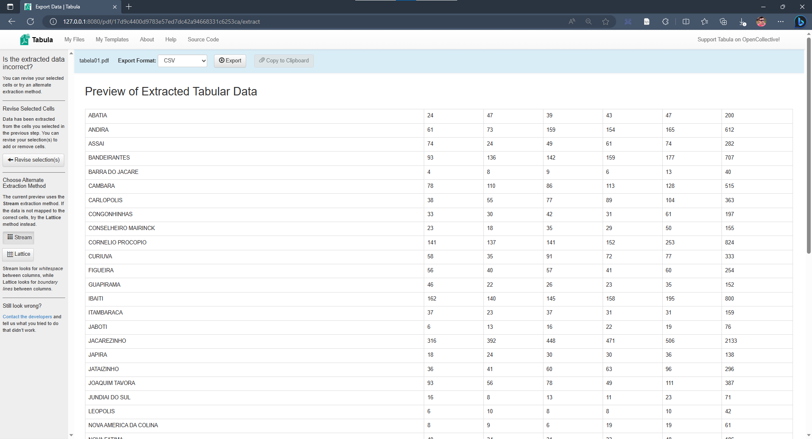

Análise dos casos de violência doméstica no Norte Pioneiro do Paraná
Um exemplo de extração de dados de arquivos pdf com o software Tabula.
No ano de 2020, a Câmara Municipal de Santo Antônio da Platina solicitou à Secretaria de Segurança Pública do Estado do Paraná dados sobre casos de violência doméstica e contra a mulher. O requerimento de solicitação está disponibilizado no site da entidade no seguinte link.
O problema é que essas solicitações são respondidas em formatos de arquivos fechados, como arquivos em formado pdf, que impedem a leitura de dados por outros programas de computador.
E com isso impedem também a realização de outras análises.
O software Tabula é um extrator de tabelas de documentos em PDF.
Com é possível extrair os dados das tabelas e exportar para arquivos abertos como arquivos com valores separados por vírgulas (csv - Comma-Separated Values).
Esse é um programa feito em Java, então você vai precisar instalar o Java na sua máquina para executar o Tabula. As instruções para instalação podem ser encontradas na documentação do repositório da ferramenta, disponível nesse endereço.
Após executar o programa, só precisa selecionar o arquivo em PDF e selecionar a área em que está a sua tabela.

E então, o programa cuida do resto…

Com os dados em um formato aberto, então é possível realizar a leitura com um código em Python, por exemplo, e realizar análises complementares e criar gráficos como o observados a seguir.
import pandas as pd
import seaborn as sns
from matplotlib import pyplot as plt
anos = [f'20{x}' for x in range(16,21)]
df = pd.read_csv('tabela-03-dados.csv')
df = df.drop(columns=['TOTAL'])
df[anos] = df[anos].astype(int)
df2 = df.melt(
id_vars=["MUNICÍPIO"],
value_vars=anos,
var_name="ANO",
value_name='value')
select = (df2['MUNICÍPIO'] == "SANTO ANTONIO DA PLATINA") | (df2['MUNICÍPIO'] == "JACAREZINHO")
fig = plt.figure(figsize=(15,7))
g = sns.lineplot(data=df2[~select],
x="ANO",
y="value",
units="MUNICÍPIO",
estimator=None,
markers=True,
color=".7",
linewidth=1,
legend= False)
g4 = sns.lineplot(data=df2[select],
x="ANO",
y="value",
hue="MUNICÍPIO",
markers=True,
dashes=False,
legend=True)
sns.despine(right=True, left=True)
plt.ylabel("Quantidade")
plt.xlabel("Ano");
O gráfico a seguir apresenta a quantidade dos casos de violência doméstica, por natureza jurídica, nos municípios da região do Norte Pioneiro do Estado do Paraná, no período de 01/01/2016 a 31/12/2020.

No eixo vertical (eixo Y) temos representado a quantidade de casos, enquanto que no eixo horizontal (eixo X) são representados os anos de 2016 à 2020. Os municípios de Jacarezinho e Santo Antônio da Platina estão destacados, enquanto os demais municípios do Norte Pioneiro estão representados por linhas cinza-claro.
Com essa representação é possível observar que o município de Jacarezinho se destaca entre os demais. A razão para tanto, pode ser que este é o único município da região que possui uma Delegacia Especial da Mulher.
Nesse cenário, podemos levantar a hipótese se existe uma subnotificação dos casos de violência doméstica nos demais municípios que não contam com uma unidade especializada para atender a esses casos.
Aviso
As opiniões expressas nesse artigo são somente minhas, e não refletem necessáriamente a opinião de instituições ou pessoas eventualmente citadas nesse artigo.
Referências
Câmara de Santo Antônio da Platina. Requerimento nº 598 de 2020, de autoria da Vereadora Mirian Rodrigues Bonomo Montanheiro. Disponível em: https://sapl.santoantoniodaplatina.pr.leg.br/materia/2613. Último acesso em 07 de abr. de 2024.
Tabula Oficial Webpage. https://tabula.technology/